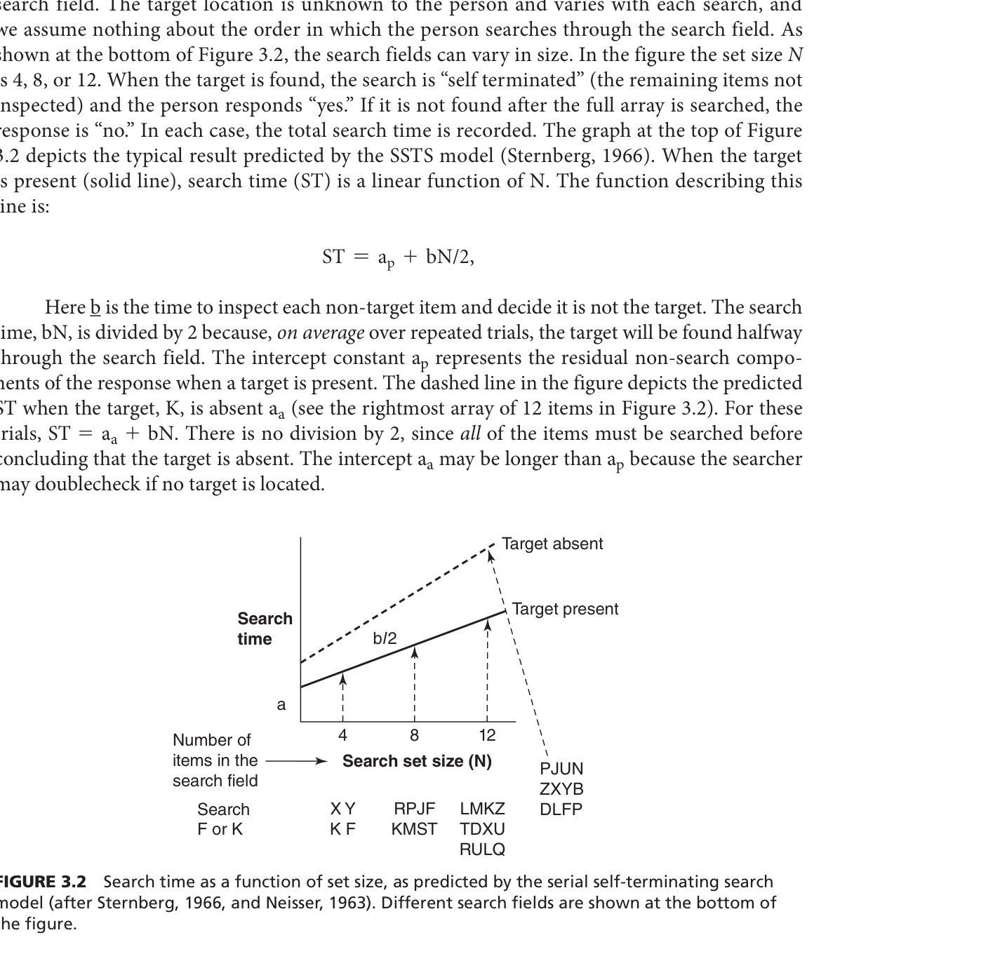
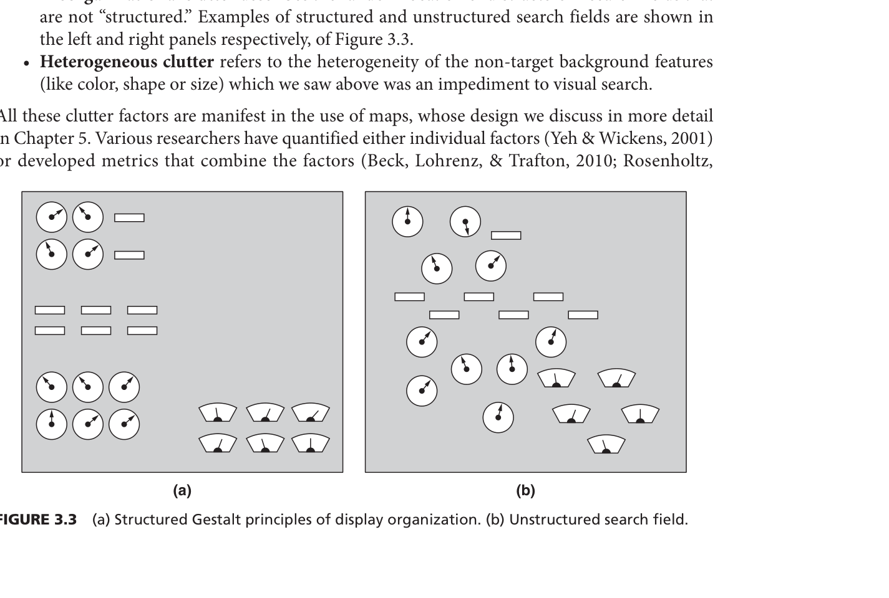
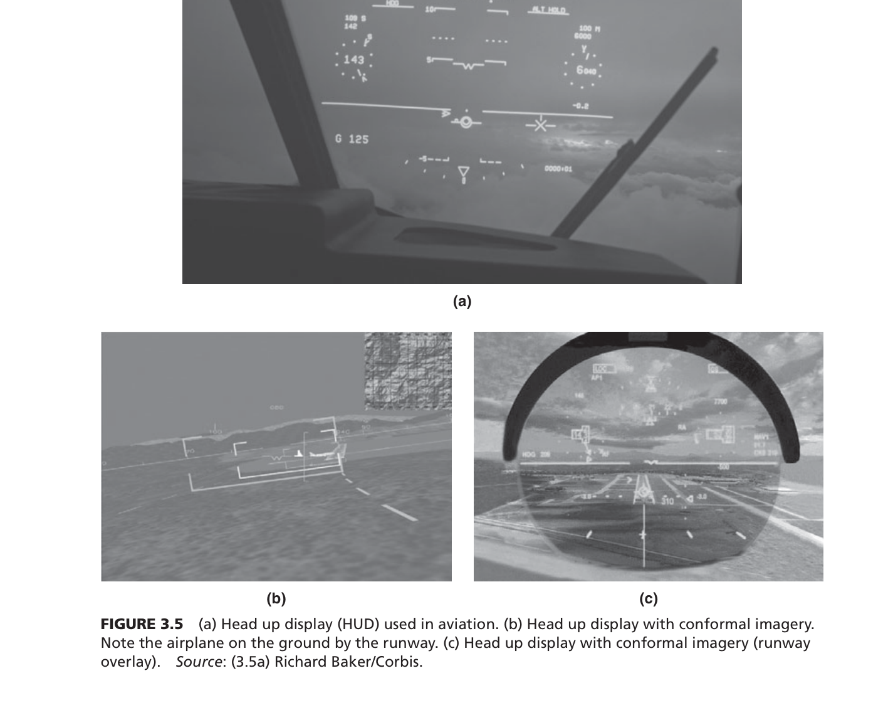

- Visual Search = 눈으로 뭔가 찾는 행동
- UFOV (Useful Field of View) = 한 번에 선명하게 볼 수 있는 범위
- Signal Detection = 있는 걸 "있다"고 맞히는 능력
동심원 그림 = 눈의 시야 범위. 가운데 노란 부분이 선명한 영역(UFOV), 바깥으로 갈수록 흐려짐. 검색원은 이 좁은 원을 움직여가며 화면을 훑는 것.
동심원 가운데 가리키며 → "여기가 한 번에 선명하게 볼 수 있는 범위입니다. 검색원은 이 범위로 X-ray 화면을 조금씩 훑습니다."
"그러면 이렇게 훑을 때 시간이 얼마나 걸릴까요? 예측할 수 있는 공식이 있습니다."
"공항 보안 검색원을 떠올려보세요. X-ray 화면을 볼 때 한 번에 전체가 보이는 게 아닙니다. 눈이 선명하게 볼 수 있는 범위, UFOV라고 하는데, 이 범위로 화면을 조금씩 훑어야 합니다. 이게 시각적 탐색입니다."


- SSTS = 하나씩 보다가 찾으면 멈추는 방식 (Sequential Self-Terminating Search)
- ST = 찾는 데 걸린 총 시간 (Search Time)
- a = 눈 준비 시간, b = 물건 하나 확인 시간, N = 물건 개수
ST = ap + bN/2 → 찾는 시간 = 준비 + (하나 확인 시간 × 물건 수 ÷ 2). 왜 2로 나누냐? 운 좋으면 첫 번째에서 발견, 재수 없으면 마지막. 평균 내면 절반쯤에서 찾는다.
공식의 N/2 → "2로 나누는 이유는 평균적으로 반쯤에서 찾기 때문입니다." 아래 서치라이트 그림 → "가방 속 물건을 왼쪽부터 하나씩 비춰보다가 위험물(K)을 발견하면 STOP."
"근데 만약 가방에 무기가 아예 없으면 어떻게 될까요?"
"이 공식은 어렵게 보이지만 핵심은 하나입니다. 가방에 물건이 10개면 평균 5개쯤 봤을 때 찾고, 100개면 50개. 물건이 많으면 정직하게 느려집니다. 그게 N/2입니다."

- Target present = 무기가 있는 가방 → 그래프의 실선
- Target absent = 무기가 없는 가방 → 그래프의 점선
X축(가로) = 가방 속 물건 개수, Y축(세로) = 확인 시간.
실선(아래, 완만) = 있을 때 → 발견 즉시 멈춤
점선(위, 가파름) = 없을 때 → 끝까지 다 확인
점선이 약 2배 가파른 이유: N/2가 아니라 N 전체를 봐야 하니까.
두 선을 번갈아 가리키며 → "실선은 찾으면 멈추니까 완만하고, 점선은 '없다'는 확신을 얻으려면 전부 봐야 하니까 가파릅니다."
"그런데 만약 가방에 무기가 2개 이상이면? 1개 찾고 멈춰도 될까요?"
"무기가 있으면 발견 즉시 멈추니까 빠르지만, 없는 가방은 끝까지 다 뒤져봐야 '깨끗하다'고 판정합니다. 그래서 시간이 정확히 두 배입니다."

- Exhaustive Search = 하나 찾아도 안 멈추고 전부 검사
- Multi-check Loop = 빙글빙글 반복 확인
- Nodules = X-ray에서 보이는 동그란 혹 (결절)
순환 화살표 = 위험물을 하나 찾아도 멈추지 않고, 계속 빙글빙글 돌면서 더 있는지 확인하는 과정.
순환 화살표를 따라 돌며 → "하나 찾아도 여기서 안 멈추고, 계속 돌면서 더 있는지 확인합니다."
"지금까지 물건을 하나씩 확인했는데, 만약 위험물이 주변과 확 다르게 생겼으면 하나씩 안 봐도 되지 않을까요?"
"SSTS는 하나 찾으면 멈추는 모델인데, 현실에서는 위험물이 여러 개일 수 있습니다. 칼 1개 찾고 '통과'시키면 나머지를 놓치겠죠. 이게 첫 번째 예외입니다."

- Pop-out = 눈에 확 튀어서 바로 보이는 것
- Parallel = 하나씩이 아니라 한꺼번에 봄
- Preattentive = 의식하기 전에 자동으로 처리됨
- 기울기 b = 0 = 물건이 늘어도 찾는 시간 안 늘어남
왼쪽 점 배열의 노란 O = 팝아웃. 오른쪽 그래프 — X축: 물건 수, Y축: 찾는 시간. 선이 완전히 수평(기울기=0) = 물건 4개든 16개든 찾는 시간 동일. 이게 팝아웃의 증거.
왼쪽 노란 O → "바로 보이시죠? 이게 팝아웃입니다." 오른쪽 수평선 → "물건이 아무리 많아도 시간이 안 늘어나서 선이 평평합니다."
"근데 '금속이면서 액체'처럼 특징 2개를 동시에 찾아야 하면 여전히 팝아웃 될까요?"
"X-ray에서 총 모양이 딱 보이면 주변에 물건이 아무리 많아도 바로 눈에 들어옵니다. 이걸 팝아웃이라 하고, 그래프가 수평이 되는 게 특징입니다."

- Conjunction = 특징 2개 이상을 합쳐서 찾기
- Homogeneous = 방해물이 다 비슷하게 생김
- Heterogeneous = 방해물이 전부 제각각
2×2 표: 세로 = 단일 특징 vs 결합, 가로 = 동질 vs 이질 방해물. 오른쪽 아래(결합+이질)가 가장 어렵다. 저울 = 밀집도 vs 클러터 비교.
2×2 표 오른쪽 아래 → "특징이 합쳐지고 방해물까지 제각각이면 가장 찾기 어렵습니다."
밀집도와 클러터의 수학적 관계는 → "이 부분은 교수님께서 더 자세히 설명해주실 겁니다."
"그러면 검색원이 엄청 많이 훈련하면 이런 조합 탐색도 빨라질 수 있을까요?"
"총 모양은 팝아웃으로 바로 보이지만, '금속이면서 액체인 것'은 두 가지를 동시에 따져야 해서 하나씩 확인해야 합니다. 방해물이 제각각이면 더 힘듭니다."

- Consistent Mapping = 항상 같은 걸 찾기 (맨날 칼만 찾기)
- Varied Mapping = 매번 다른 걸 찾기 (오늘 칼, 내일 폭발물, 모레 총)
- Automaticity = 생각 안 해도 자동으로 되는 것
위쪽 화살표(일관 매핑): 순차 처리 → 임계점 돌파 → 병렬 처리로 전환! 아래쪽(다양 매핑): 영원히 순차 처리에 머묾.
위쪽 "임계점 돌파" → "베테랑 검색원은 여기를 넘어서 자동화됩니다." 아래쪽 → "매번 바뀌면 영원히 여기 머뭅니다."
"그러면 검색원의 뇌는 화면을 무작정 훑는 게 아니라 뭔가 전략이 있지 않을까요?"
"택배 분류하듯 맨날 같은 걸 찾으면 자동화됩니다. 하지만 '오늘은 폭발물, 내일은 마약'처럼 매번 바뀌면 아무리 베테랑이어도 하나씩 봐야 합니다."

- Guided Search = 뇌가 전략적으로 후보를 줄여가며 찾는 방식
- Top-down = 경험과 지식을 활용해서 범위를 좁힘
- Feature tuning = "금속만 골라봐"처럼 특징으로 필터링
- 7 ± 2 = 한 번에 효율적으로 처리 가능한 항목 수
깔때기 그림: 위(넓음) = X-ray 화면 전체 → 특징 필터(금속만) → 위치 경험(모서리 쪽) → 맨 아래(좁음) = 남은 후보에서 하나씩 확인. 위→아래로 후보가 줄어든다.
깔때기 위→아래 손가락 내리며 → "전체에서 점점 좁혀갑니다. 메뉴가 7개 안팎일 때 가장 효율적인 이유도 이겁니다."
"이렇게 전략적으로 찾는데, 만약 무기가 거의 안 나오는 날이 계속되면 어떻게 될까요?"
"경험 많은 검색원은 전부 다 보지 않습니다. 색깔, 위치 같은 단서로 후보를 줄여가는 깔때기 구조입니다."

- Expectancy = "얼마나 자주 나올 거라 예상"
- Mock targets = 훈련용 가짜 위험물
- Premature stopping = 충분히 안 보고 "없다"고 판정
- Inattentional blindness = 눈앞에 있어도 못 봄
왼쪽 막대: 출현율 50% → 1%로 하락. 오른쪽 막대: 놓침률 7% → 30%로 폭증. 안 나올 거라 기대하면 대충 보게 된다. 방지책 = 가짜 무기를 일부러 섞음.
오른쪽 30% 막대 → "출현율이 1%로 떨어지면 놓침이 30%까지 올라갑니다. 그래서 실제로 가짜 무기를 섞습니다."
"이건 검색원의 기대 때문이었고, 이제 X-ray 화면 자체가 복잡해서 못 찾는 문제를 보겠습니다."
"가방 1000개 중 무기가 나오는 건 일주일에 한 번도 없으면, 검색원이 점점 대충 봅니다. 그래서 실제 공항에서는 가짜 무기 이미지를 일부러 섞어 긴장감을 유지시킵니다."


- Clutter = 화면의 시각적 소음. 어수선함
- HUD = 앞유리에 정보가 뜨는 디스플레이 (Head-Up Display)
4칸 격자:
1. 수량 = 물건이 너무 많음 (짐 30개 가방)
2. 근접 = 다닥다닥 붙어있음 (칼이 노트북 밑에 겹침)
3. 비조직 = 정리 안 됨 (뒤죽박죽)
4. 이질적 = 모양이 전부 다름
4칸을 시계방향 하나씩 → 각각 한마디. "너무 많거나 / 다닥다닥이거나 / 정리 안 되었거나 / 생긴 게 다 다르거나."
"이렇게 복잡해서 검색원이 못 찾으면, 시스템이 도와줄 방법은 없을까요? 3막에서 기계의 도움을 봅니다."
"아무리 뛰어난 검색원이어도 가방 속이 뒤죽박죽이면 한계가 있습니다. 클러터, 쉽게 말해 '시각적 소음'인데요, 원인이 4가지입니다."

- Cue = "여기 의심!" 표시. 시스템이 보내는 신호
- Attention Capture = 시선을 강제로 끌어당김
- Change blindness = 눈앞에서 바뀌어도 못 알아챔
- Reliability = 단서가 맞을 확률
타임라인: 자극 전 → AI 자동 판단 → 단서 제공 → 검색원의 주의 포착. 단서 성능 = 위치(어디서 알려주냐) + 신뢰도(얼마나 맞냐).
타임라인 왼→오 → "AI가 이 과정을 자동으로 해서 검색원에게 알려줍니다."
"그 두 가지가 어떻게 다른지, 먼저 첫 번째 방법부터 보겠습니다."
"사람은 변화맹 때문에 눈앞에서 바뀌어도 놓칠 수 있습니다. 그래서 AI가 '여기 봐!'하고 알려줍니다. 방법이 두 가지입니다."

- Central Cue = 화면 가운데에서 화살표로 방향 알려줌
- Fixation cross = 화면 중앙의 + 표시
- Cognitively driven = 머리로 해석해야 함 (반사적이 아님)
저울 그림: 왼쪽(이점) = 맞으면 빠르게 찾음 + 물건을 안 가림. 오른쪽(비용) = 틀리면 엉뚱한 곳 확인 → 시간 낭비. 양날의 검.
저울 양쪽 번갈아 → "맞으면 이쪽, 이득. 틀리면 이쪽, 손해. 양날의 검입니다."
"그러면 의심 물건 바로 위에서 직접 깜빡이면 더 정확하지 않을까요?"
"첫 번째 방법은 화면 가운데에 화살표를 띄우는 겁니다. 네비게이션처럼 '오른쪽 위 봐'라고요. 맞으면 빠르지만 틀리면 시간만 낭비합니다."

- Peripheral Cue = 의심 물건 위에서 직접 깜빡임
- Perceptually driven = 반사적으로 눈이 감 (생각 필요 없음)
- Multiple flashing onsets = 여러 번 깜빡여야 효과적
레이더 뷰: 의심 물건 위치에서 동심원 퍼져나감 = 직접 깜빡여서 눈이 반사적으로 감. 90도 시각도 = 물리적 인지 한계.
레이더 뷰 깜빡이는 부분 → "여기서 직접 깜빡이니까 생각 필요 없이 반사적으로 빠릅니다."
"근데 깜빡임이 의심 물건을 오히려 가려버리는 부작용은 없을까요?"
"카톡 빨간 뱃지 보면 생각 안 해도 눈이 가죠? 같은 원리입니다. 의심 물건 위에서 직접 깜빡이니까 첫 번째 방법보다 빠릅니다."

- Masking = 깜빡임이 목표물을 가려버리는 현상
- Identify = "이게 뭔지" 구분 (있다/없다가 아니라, 칼인지 가위인지)
탱크 그림: 깜빡이는 빛이 탱크를 덮어버림 → 탱크가 있다는 건 아는데 아군인지 적군인지 구분 못 함. 검색원으로 치면: 칼인지 가위인지 구분 못 함.
탱크 위 노란 빛 → "이 빛 때문에 '뭔가 있다'까지는 아는데, '뭔지'는 가려서 모릅니다."
마스킹의 신경과학적 메커니즘은 → "이 부분은 교수님께서 보충해주실 겁니다."
"그러면 검색원이 AI 표시를 너무 믿어서, AI가 가리키는 곳만 뚫어지게 보면 어떻게 될까요?"
"깜빡임이 너무 강하면 물건을 가려서 '여기 뭔가 있다'까지는 아는데 '칼인지 가위인지' 구분이 안 됩니다. 위험물인지 판단을 못 하는 거죠."


- Attentional Tunneling = AI 표시만 뚫어지게 보고 나머지를 전부 놓침
- Weapons effect = 강도의 총에만 눈이 고정돼서 범인 얼굴을 기억 못 함
총 그림 = 무기 효과. 강도 목격자가 총에만 집중 → 범인 얼굴 기억 못 함. 양옆 "IGNORED MASSIVE DANGERS" = AI가 표시 안 한 곳의 위험물을 전부 놓침.
총 가리키며 → "여기만 뚫어지게 보느라" 양옆 → "이쪽의 진짜 위험물을 전부 놓칩니다."
VR 기기에서의 터널링 연구는 → "이 부분은 교수님께서 추가 설명해주실 겁니다."
"결국 좋은 보안 시스템이란, AI 단서의 장점은 살리되 터널링은 유발하지 않는 균형 잡힌 설계입니다."
"AI가 '여기!'라고 표시하면 검색원이 거기만 봅니다. 나머지는 아예 확인을 안 합니다. 이게 3막의 결론입니다. 정리하면 — 1막에서 사람의 한계, 2막에서 환경의 방해, 3막에서 기계의 도움과 새로운 함정을 봤습니다. 결국 사람과 기계의 균형이 핵심입니다."